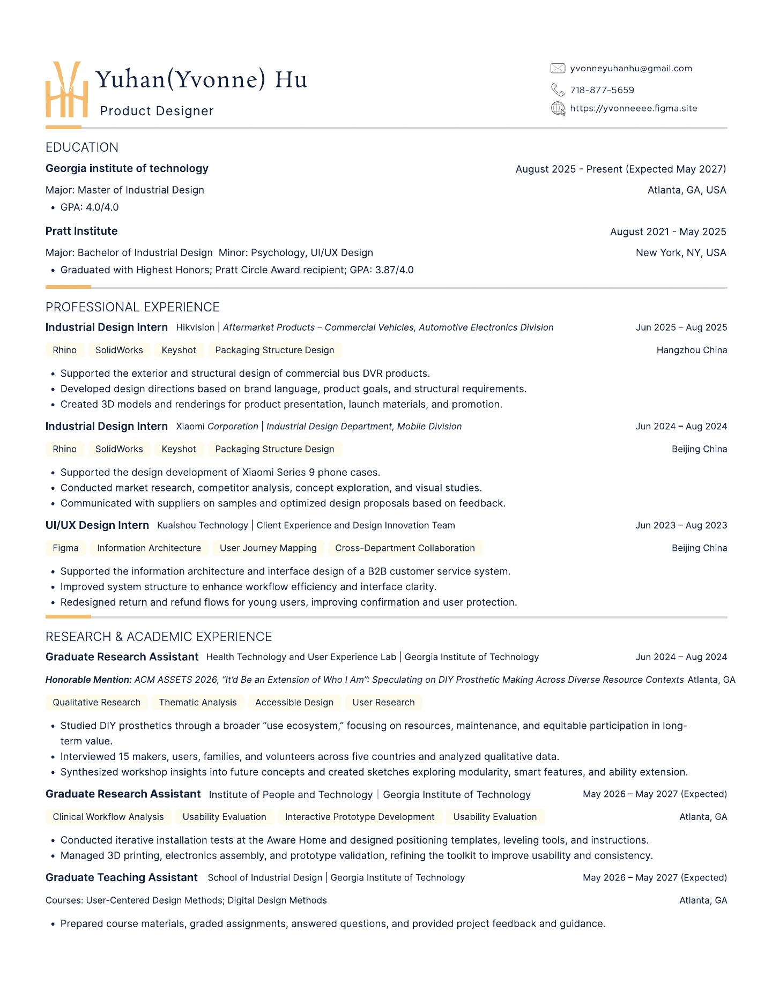

Resume
Open PDFEducation
Georgia Institute of Technology
Master of Industrial Design · Expected May 2027
Pratt Institute
Bachelor of Industrial Design · 2025
Psychology and UI/UX Design · Highest Honors
Experience
Graduate research and teaching
Georgia Tech · Atlanta
Industrial Design Intern
Hikvision · Hangzhou · Summer 2025
Industrial Design Intern
Xiaomi · Beijing · Summer 2024
UI/UX Design Intern
Kuaishou · Beijing · Summer 2023
Skills & languages
User research, rapid prototyping, service design, and usability evaluation
Rhino, SolidWorks, KeyShot, Figma, and Adobe Creative Suite
Mandarin Chinese and English
Recognition
ACM ASSETS Honorable Mention
Research on DIY prosthetic-making · 2026
Pratt Circle Award
Pratt Institute · 2025
Full resume
